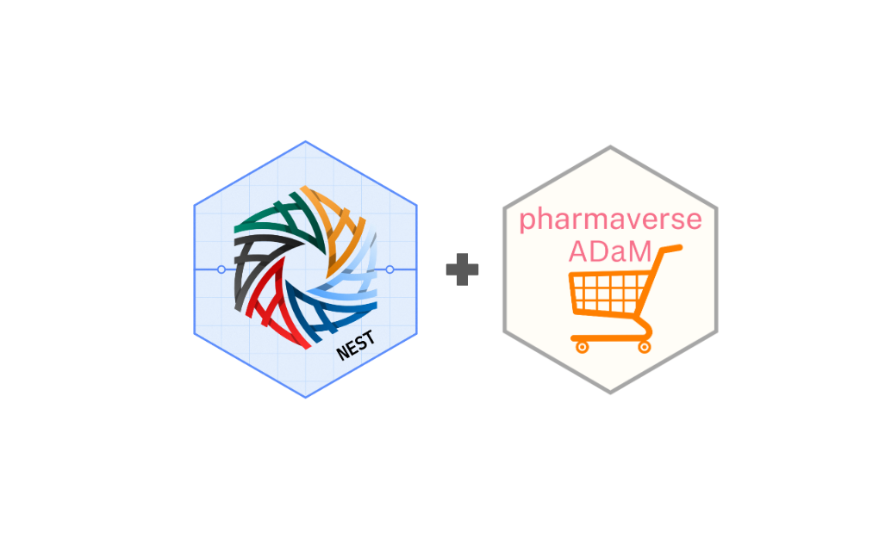

Introduction
In the dynamic world of clinical research, innovation and collaboration are key drivers of success. The NEST and
Who are the NEST Team?
The NEST team, an acronym for Next-Generation Exploratory and Standardized Tools, has pioneered a collection of open-sourced R packages designed to expedite insight generation under clinical research settings. Originating at Roche, NEST has attracted a diverse array of collaborators from academia, the pharmaceutical industry, and clinical research institutes, largely due to efforts like pharmaverse. Their mission is to accelerate clinical reporting and welcome contributions from the broader scientific community.
Who are the admiral team?
Focused on a complementary goal, the
Setting the Stage for Collaboration
Over a year ago, an opportunity for collaboration was identified within NEST and
This potential pivot would beneficial for both teams. For one thing, it would allow the NEST team to achieve more realistic and comprehensive testing, thus enhancing the robustness of their development work. Simultaneously, it would mean that the
Key Achievements
The following months were a period of collaboration for the two teams as this switch was enacted. Numerous achievements were identified:
Realistic Data Integration: Transitioning from simulated to more realistic data provided the NEST team with more accurate and relevant testing conditions. This change was crucial in identifying and rectifying potential software limitations.
Scope and Dependency Management: Both teams agreed to avoid creating strong interdependencies that could extend release cycles. NEST packages maintained minimal data for documentation purposes, while
ADaM in R Asset Library • admiral {admiral} preserved extensive datasets separately.CI Integration and Automation: On the NEST side, new CI integration tests ensured that template updates were automatically verified against stored
ADaM Test Data for the Pharmaverse Family of Packages • pharmaverseadam {pharmaverseadam} datasets. This maintained consistency and allowed developers to identify intended changes promptly.Strategic Pipelines: A pipeline was established in
ADaM Test Data for the Pharmaverse Family of Packages • pharmaverseadam {pharmaverseadam} so that any updates to theSDTM Test Data for the Pharmaverse Family of Packages • pharmaversesdtm {pharmaversesdtm} source datasets and/or theADaM in R Asset Library • admiral {admiral} template scripts can trigger an update toADaM Test Data for the Pharmaverse Family of Packages • pharmaverseadam {pharmaverseadam} .
Recent Developments
The collaboration bore fruit as the teams uncovered critical insights and improvements. For instance, using the
Conclusion
The collaboration between the NEST and
The success of this collaboration highlights the profound impact of shared goals and collective innovation, paving the way for future advancements in clinical research methodologies and outcomes.
Acknowledgements
We would like to thank the following people for their support during this project:
Daphne Grasselly for establishing the automated CI refresh pipeline in
ADaM Test Data for the Pharmaverse Family of Packages • pharmaverseadam {pharmaverseadam} , and Kangjie Zhang for leading theADaM Test Data for the Pharmaverse Family of Packages • pharmaverseadam {pharmaverseadam} team in 2024.Ben Straub, Stefan Bundfuss, Zelos Zhu, Ross Farrugia and Jeff Dickinson for their support from the
ADaM in R Asset Library • admiral {admiral} side.Leena Khatri and Emily de la Rua for support from the NEST side.
Last updated
2025-03-03 09:53:14.031225
Details
Reuse
Citation
BibTeX citation:
@online{zhu2025,
author = {Zhu, Joe and Mancini, Edoardo},
title = {A Collaborative Triumph: {Re-using} Test Data Between the
{NEST} and Admiral Teams},
date = {2025-01-15},
url = {https://pharmaverse.github.io/blog/posts/2025-01-15_nest_and_pharmaverseadam/nest_and_pharmaverseadam.html},
langid = {en}
}
For attribution, please cite this work as:
Zhu, Joe, and Edoardo Mancini. 2025. “A Collaborative Triumph:
Re-Using Test Data Between the NEST and Admiral Teams.” January
15, 2025. https://pharmaverse.github.io/blog/posts/2025-01-15_nest_and_pharmaverseadam/nest_and_pharmaverseadam.html.